Phần này hướng dẫn các bước lắp đặt và hiệu chỉnh các loại camera 3D khác nhau, kèm theo lưu ý cần thiết cho từng bước.
Lưu ý
- Camera cần tắt và khởi động lại sau khi cài đặt IP;
- Nếu sử dụng nhiều cổng mạng để kết nối camera, cần đặt các IP khác mạng, ví dụ: 192.168.178.10 và 192.168.179.10;
- Ghi chú IP và port trên nhãn dán gắn trên camera để tiện điều chỉnh.
Vấn đề 1: Phần mềm VA không kết nối được camera
Mô tả hiện tượng:
Trong VA, tại công cụ “3D Camera Settings” hoặc “3D Camera Capture”, danh sách thả xuống “Camera Name” trống, đồng thời trong giao diện “Settings” → “3D Camera” cũng không hiển thị thông tin camera.
Giải pháp:
| STT | Nguyên nhân có thể | Phương pháp kiểm tra | Kết quả kiểm tra (hiện tượng) |
|---|---|---|---|
| 1 | Camera không có điện: nguồn hỏng, điện áp không ổn định hoặc chưa cắm | 1: Kiểm tra đèn LED nguồn phía sau camera SmartRay; 2: Thử nguồn khác | Đèn LED không sáng |
| 2 | Mạng chưa kết nối hoặc IP sai | Kiểm tra trạng thái đèn LED mạng trên camera | Đèn mạng nhấp nháy chậm (~2s/lần) |
| 3 | SDK LCubor 3D chưa cài đúng | 1: Kiểm tra phiên bản SDK đã cài và so sánh với thông tin driver tại mục 1.1.1 | SDK LCubor 3D cũng không phát hiện được camera |
Vấn đề phổ biến 2: Camera 3D thường xuyên mất kết nối
Mô tả hiện tượng:
Trong quá trình vận hành, khi chạy đến “3D Camera Settings Tool” hoặc “3D Image Capture Tool”, chương trình bị treo tại công cụ này, camera liên tục mất kết nối và kết nối lại.
Giải pháp:
| STT | Nguyên nhân có thể | Phương pháp kiểm tra | Kết quả kiểm tra (hiện tượng) |
|---|---|---|---|
| 1 | Nguồn camera không ổn định | 1: Kiểm tra trạng thái đèn LED camera; 2: Kiểm tra kết nối nguồn camera; 3: Kiểm tra cáp nguồn camera có bị hỏng hay không | 1: Đèn LED tắt rồi sáng liên tục; 2: Camera dùng nguồn từ trạm, trạm ngừng cung cấp điện thời gian dài; 3: Cáp nguồn là loại của bên thứ ba, độ mềm dẻo kém dẫn đến đứt cáp |
| 2 | Firmware không phù hợp | Trong VA → Settings → 3D Camera, xem phiên bản firmware của camera | Firmware không phù hợp, tham khảo mục 1.1.1 về các phiên bản driver 3D camera được VA hỗ trợ |
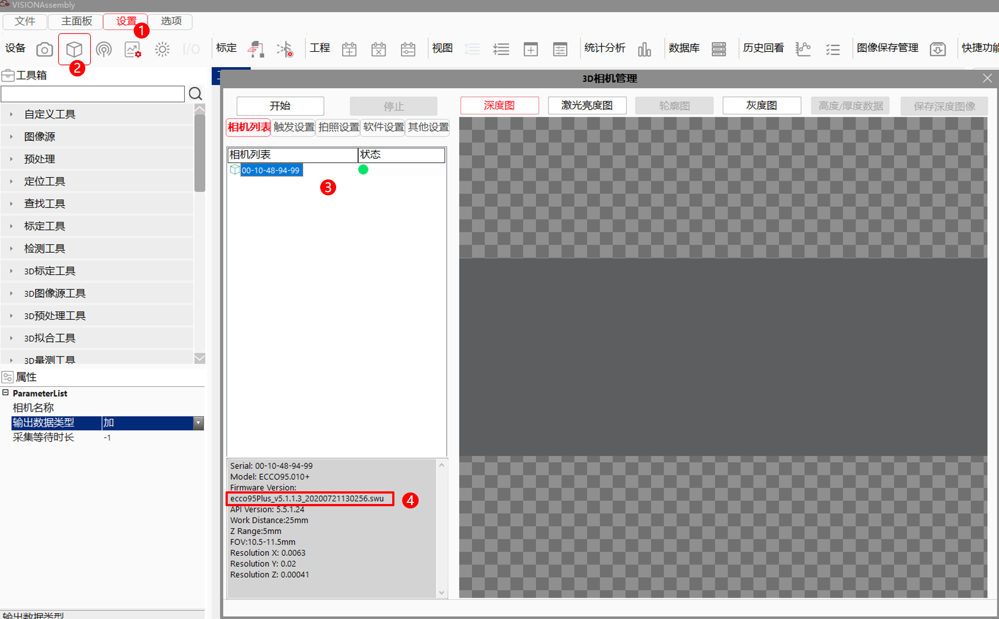
Vấn đề phổ biến 3: Hình ảnh hiển thị bình thường nhưng camera không kích hoạt
Mô tả hiện tượng:
Trong quá trình thu hình, camera 3D không phát laser, phải dừng và nhấn nút chạy lại mới hoạt động.
Giải pháp:
| STT | Nguyên nhân có thể | Phương pháp kiểm tra | Kết quả kiểm tra (hiện tượng) |
|---|---|---|---|
| 1 | Camera mất kết nối trong giai đoạn chuẩn bị hoặc đang thu hình | Đảm bảo SDK và VA đã cài đúng, phần cứng ổn định. Kiểm tra chế độ trigger của camera và tín hiệu đầu vào tương ứng, đồng thời kiểm tra dây kết nối cho chế độ trigger đó. |
Vấn đề phổ biến 4: Camera 3D không phát sáng
Mô tả hiện tượng:
Camera 3D không phát sáng, nhưng khi vật liệu tiếp theo đến thì lại phát sáng bình thường.
Giải pháp:
| STT | Nguyên nhân có thể | Phương pháp kiểm tra | Kết quả kiểm tra (hiện tượng) |
|---|---|---|---|
| 1 | Camera nhận tín hiệu trigger ban đầu không đồng bộ hoặc bị lỗi | 1: Kiểm tra thời gian truyền tín hiệu giữa PLC và camera | 1: Trước khi chạy camera, chuẩn bị giao tiếp với PLC rồi mới gửi trigger; 2: Căn chỉnh thời gian gửi trigger, kiểm tra thời gian CT xem có quá lâu, khiến xung phần cứng không kịp nhận |
| 2 | Firmware camera không phù hợp | Sử dụng giao diện 3D control trong VA, click vào camera (click SN bên trái), xem thông tin firmware | Firmware không phải phiên bản 5.1.1.3 |
Vấn đề phổ biến 5: Không thể tìm lại IP của camera SmartRay
Mô tả hiện tượng:
Khi thiết lập IP, một số người dùng có thể không đặt IP theo dải 192.168.178 mà dùng IP khác. Sau một thời gian dài (hoặc thay đổi máy tính công nghiệp), người dùng quên IP đã đặt, dẫn đến không thể kết nối camera.
Giải pháp:
| STT | Nguyên nhân có thể | Phương pháp kiểm tra | Kết quả kiểm tra (hiện tượng) |
|---|---|---|---|
| 1 | — | 1: Tải và cài đặt phần mềm bên thứ 3 để xem IP (ví dụ: Wireshark), sau đó kết nối camera và dùng phần mềm để tìm lại IP | Các bước chi tiết và hiện tượng được minh họa như hình dưới |
Các bước tìm lại IP của camera SmartRay
Bước 1: Tải và cài đặt phần mềm bên thứ 3: Wireshark;
Bước 2: Chạy Wireshark với quyền quản trị viên, nhấn nút như hình và chọn card mạng tương ứng (nếu kết nối cảm biến, chọn Local Area Connection). Nhấn “Start”, lưu ý lúc này cảm biến chưa được cấp nguồn!
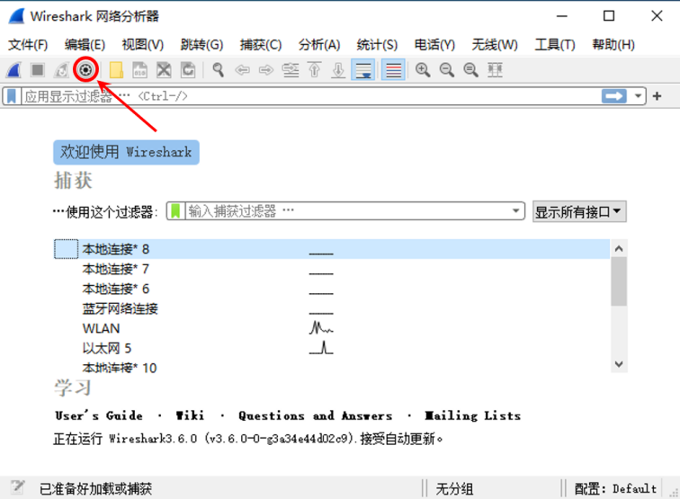
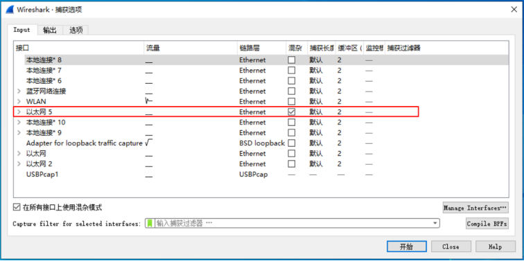
Bước 3: Cấp nguồn cho cảm biến, quan sát cột IP tương ứng, cột thứ hai sẽ hiển thị IP đã cài đặt, ví dụ: 192.168.179.10.
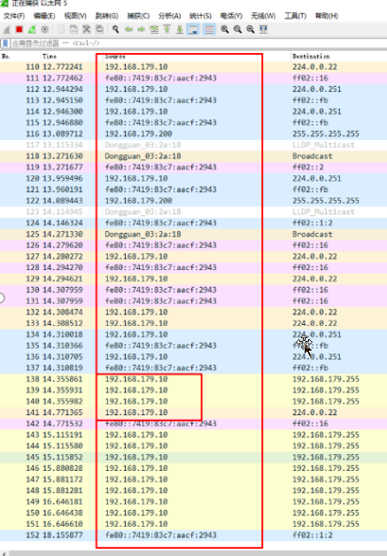
Lưu ý
Để thuận tiện cho việc điều chỉnh, ghi lại IP và cổng đã chỉnh, dán nhãn lên camera.
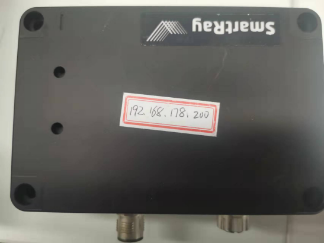
Sau đây là các bước điều chỉnh trực tiếp trong VISIONAssembly 6.5.xxx:
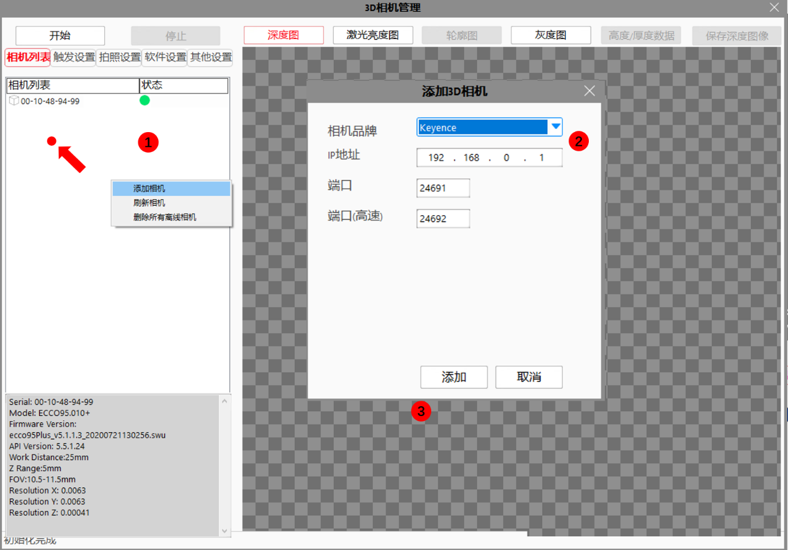

Nhấn “Hoàn tất” để thoát phần mềm LJ-X, sau đó mở VA để thực hiện thu thập hình ảnh.
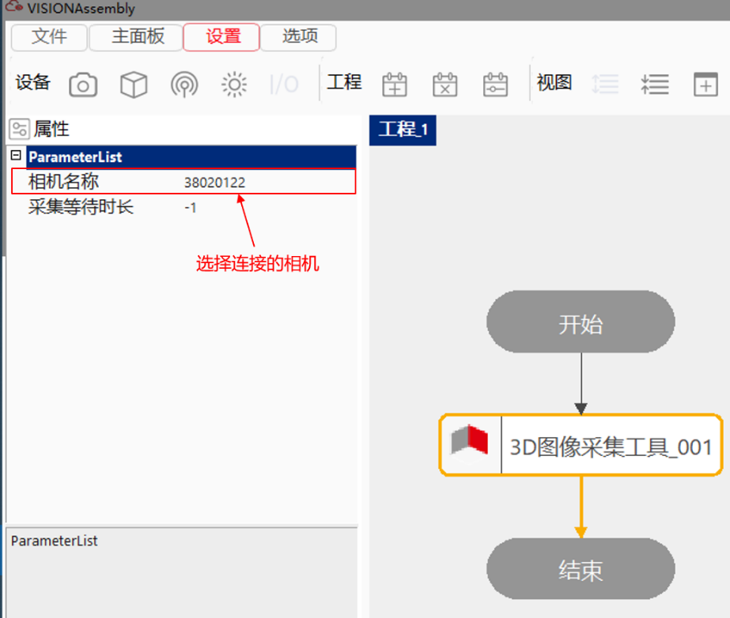
Mô tả cấu trúc đầu ra và cấp nguồn
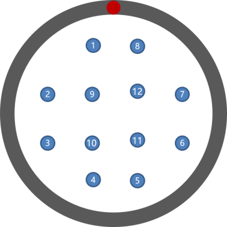
Giao diện cấp nguồn và I/O của LCubor 3D và ý nghĩa từng cổng
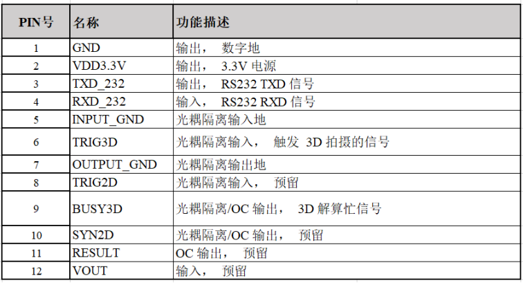
Ý nghĩa đèn LED và trạng thái của camera LCubor 3D
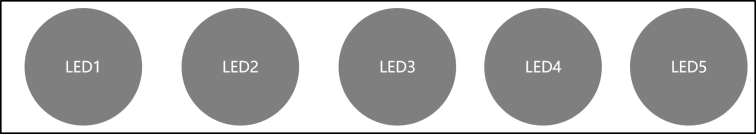
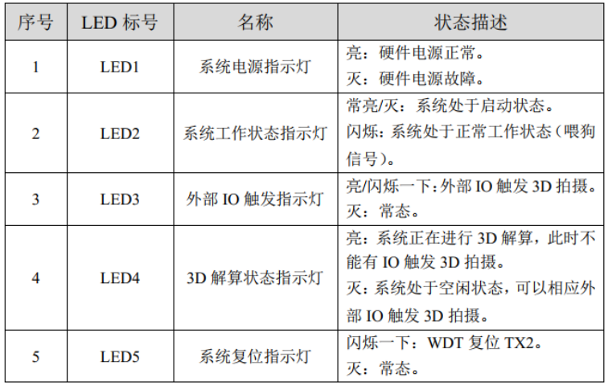
Cài đặt kết nối camera LCubor 3D
Hình thực tế và sơ đồ cấu trúc của camera SSZN
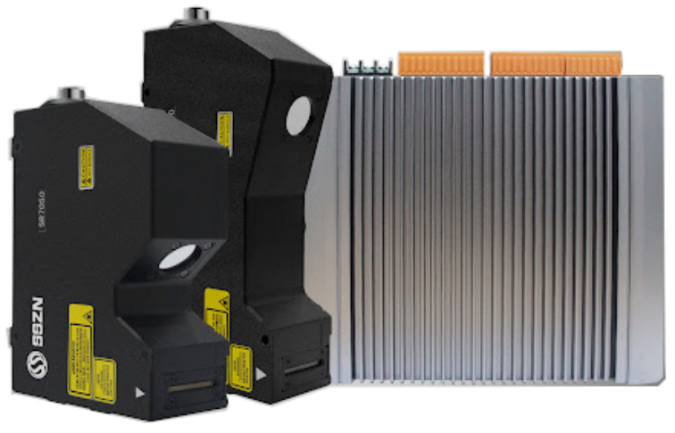
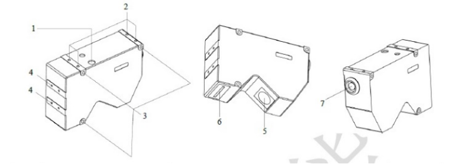
| STT | Tên bộ phận | Chức năng |
|---|---|---|
| 1 | Đèn LED phát laser |
|
| 2 | Lỗ vít chuyên dụng để lắp đặt | Sử dụng khi lắp đầu cảm biến |
| 3 | Lỗ lắp đặt | Dùng bu lông lục giác có lỗ đi kèm để cố định cảm biến |
| 4 | Lỗ lắp bảng chắn sáng | Dùng để lắp bảng chắn sáng; không dùng để cố định cảm biến |
| 5 | Cửa sổ nhận ánh sáng của cảm biến | Nhận laser dùng cho đo lường |
| 6 | Cửa sổ phát laser | Phát laser dùng cho đo lường |
| 7 | Giao diện cáp cảm biến |
Bộ điều khiển SSZN và giải thích các chân
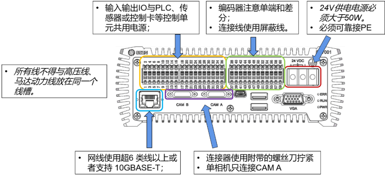
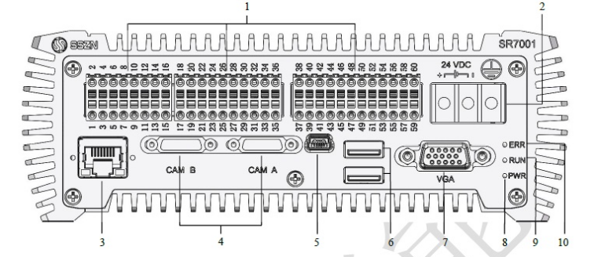
| Chân | Tín hiệu | Mô tả | Tham khảo |
|---|---|---|---|
| 1~10 | Dự trữ | ||
| 11 | LEVELCONTROL_ENABLE | Bật điều khiển mức tín hiệu bắt đầu đo lô. Dùng để chuyển chân 14 "Bắt đầu đo lô" sang chế độ điều khiển mức, đồng thời chân 15 "Dừng đo lô" không có hiệu lực. | |
| 12 | Dự trữ | ||
| 13 | Dự trữ | ||
| 14 | MEASURE_START | Nhập bắt đầu đo lô, bắt đầu đo lô. (Tín hiệu số, quang cách ly, mức thấp có hiệu lực.) | |
| 15 | MEASURE_STOP | Nhập dừng đo lô, dừng đo lô. (Tín hiệu số, quang cách ly, mức thấp có hiệu lực.) | |
| 16 | Dự trữ | ||
| 17 | TRG | Nhập tín hiệu kích hoạt, kích hoạt trigger bên ngoài. (Tín hiệu số tốc độ cao, quang cách ly, mức thấp có hiệu lực.) | |
| 18 | COM_OUT | Chân chung tín hiệu đầu ra | COM_OUT |
| 19 | COM_IN | Chân chung tín hiệu đầu vào | |
| 20 | COM_OUT | Chân chung tín hiệu đầu ra | COM_OUT |
| 21~32 | Dự trữ | ||
| 33 | READY | Đầu ra trạng thái lô. Trong quá trình đo lô xuất mức thấp, khi không đo lô xuất mức cao. | COM_OUT |
| 34 | Dự trữ | ||
| 35 | Dự trữ | ||
| 36 | Dự trữ | ||
| 37 | ENC_A1+ | Đầu vào A của bộ mã hóa vi sai, cực dương, quang cách ly, đầu vào vi sai theo chuẩn RS-422 (tương đương AM26LS32 tích hợp sẵn). | |
| 38 | ENC_A1- | Đầu vào A của bộ mã hóa vi sai, cực âm, quang cách ly, đầu vào vi sai theo chuẩn RS-422 (tương đương AM26LS32 tích hợp sẵn). | |
| 39 | ENC_B1+ | Đầu vào B của bộ mã hóa vi sai, cực dương, quang cách ly, đầu vào vi sai theo chuẩn RS-422 (tương đương AM26LS32 tích hợp sẵn). | |
| 40 | ENC_B1- | Đầu vào B của bộ mã hóa vi sai, cực âm, quang cách ly, đầu vào vi sai theo chuẩn RS-422 (tương đương AM26LS32 tích hợp sẵn). | |
| 41 | ENC_Z1+ | Đầu vào Z của bộ mã hóa vi sai, cực dương, quang cách ly, đầu vào vi sai theo chuẩn RS-422 (tương đương AM26LS32 tích hợp sẵn). | |
| 42 | ENC_Z1- | Đầu vào Z của bộ mã hóa vi sai, cực âm, quang cách ly, đầu vào vi sai theo chuẩn RS-422 (tương đương AM26LS32 tích hợp sẵn). | |
| 43 | ENC_A2_+24V | Đầu vào A đơn cực của bộ mã hóa, cực dương, điện áp 24V, quang cách ly. (Chú ý: nếu bộ mã hóa là NPN đầu ra collector mở, nối cực dương nguồn 24V; nếu bộ mã hóa là PNP đầu ra collector mở, nối với cực A của bộ mã hóa). | |
| 44 | ENC_A2_+12V | Đầu vào A đơn cực của bộ mã hóa, cực dương, điện áp 12V, quang cách ly. (Chú ý: nếu bộ mã hóa là NPN đầu ra collector mở, nối cực dương nguồn 12V; nếu bộ mã hóa là PNP đầu ra collector mở, nối với cực A của bộ mã hóa). | |
| 45 | ENC_A2_+5V | Đầu vào A đơn cực của bộ mã hóa, cực dương, điện áp 5V, quang cách ly. (Chú ý: nếu bộ mã hóa là NPN đầu ra collector mở, nối cực dương nguồn 5V; nếu bộ mã hóa là PNP đầu ra collector mở, nối với cực A của bộ mã hóa). | |
| 46 | ENC_A2_COM- | Đầu vào A đơn cực của bộ mã hóa, cực âm, chân chung, quang cách ly. (Chú ý: nếu bộ mã hóa là NPN đầu ra collector mở, nối với cực A của bộ mã hóa; nếu bộ mã hóa là PNP đầu ra collector mở, nối cực âm nguồn 5V, 12V hoặc 24V). | |
| 47 | ENC_B2_+24V | Đầu vào B đơn cực của bộ mã hóa, cực dương, điện áp 24V, quang cách ly. (Chú ý: nếu bộ mã hóa là NPN đầu ra collector mở, nối cực dương nguồn 24V; nếu bộ mã hóa là PNP đầu ra collector mở, nối với cực B của bộ mã hóa). | |
| 48 | ENC_B2_+12V | Đầu vào B đơn cực của bộ mã hóa, cực dương, điện áp 12V, quang cách ly. (Chú ý: nếu bộ mã hóa là NPN đầu ra collector mở, nối cực dương nguồn 12V; nếu bộ mã hóa là PNP đầu ra collector mở, nối với cực B của bộ mã hóa). | |
| 49 | ENC_B2_+5V | Đầu vào B đơn cực của bộ mã hóa, cực dương, điện áp 5V, quang cách ly. (Chú ý: nếu bộ mã hóa là NPN đầu ra collector mở, nối cực dương nguồn 5V; nếu bộ mã hóa là PNP đầu ra collector mở, nối với cực B của bộ mã hóa). | |
| 50 | ENC_B2_COM- | Đầu vào B đơn cực của bộ mã hóa, cực âm, chân chung, quang cách ly. (Chú ý: nếu bộ mã hóa là NPN đầu ra collector mở, nối với cực B của bộ mã hóa; nếu bộ mã hóa là PNP đầu ra collector mở, nối cực âm nguồn 5V, 12V hoặc 24V). | |
| 51 | ENC_Z2_+24V | Đầu vào Z đơn cực của bộ mã hóa, cực dương, điện áp 24V, quang cách ly. (Chú ý: nếu bộ mã hóa là NPN đầu ra collector mở, nối cực dương nguồn 24V; nếu bộ mã hóa là PNP đầu ra collector mở, nối với cực Z của bộ mã hóa). | |
| 52 | ENC_Z2_+12V | Đầu vào Z đơn cực của bộ mã hóa, cực dương, điện áp 12V, quang cách ly. (Chú ý: nếu bộ mã hóa là NPN đầu ra collector mở, nối cực dương nguồn 12V; nếu bộ mã hóa là PNP đầu ra collector mở, nối với cực Z của bộ mã hóa). | |
| 53 | ENC_Z2_+5V | Đầu vào Z đơn cực của bộ mã hóa, cực dương, điện áp 5V, quang cách ly. (Chú ý: nếu bộ mã hóa là NPN đầu ra collector mở, nối cực dương nguồn 5V; nếu bộ mã hóa là PNP đầu ra collector mở, nối với cực Z của bộ mã hóa). | |
| 54 | ENC_Z2_COM- | Đầu vào Z đơn cực của bộ mã hóa, cực âm, chân chung, quang cách ly. (Chú ý: nếu bộ mã hóa là NPN đầu ra collector mở, nối với cực Z của bộ mã hóa; nếu bộ mã hóa là PNP đầu ra collector mở, nối cực âm nguồn 5V, 12V hoặc 24V). | |
| 55~60 | Dự trữ |
Bắt đầu đo sử dụng tín hiệu phần mềm để kích hoạt
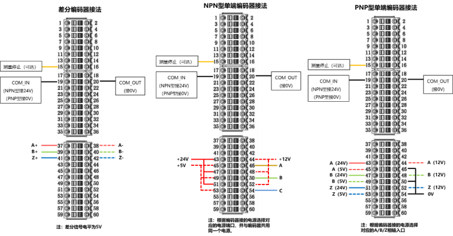
Bắt đầu đo sử dụng tín hiệu biên (edge) để kích hoạt
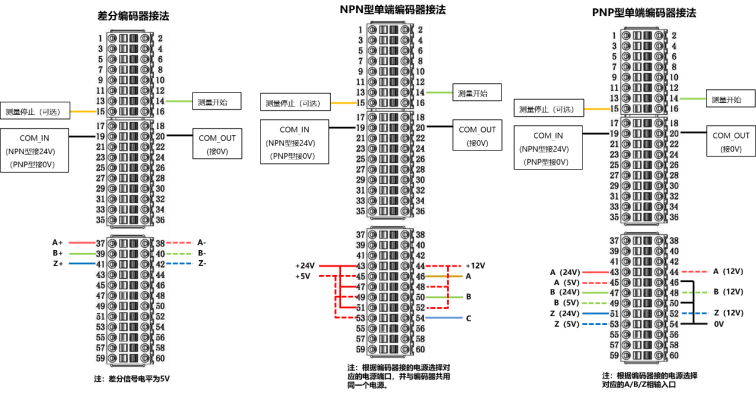
Bắt đầu đo sử dụng tín hiệu mức liên tục để kích hoạt
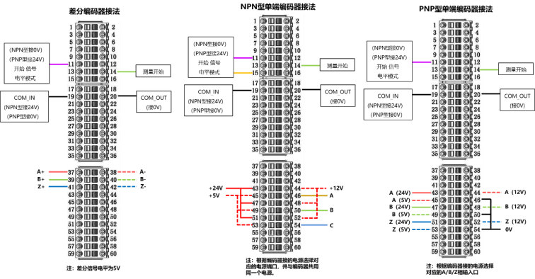
Sơ đồ lắp đặt
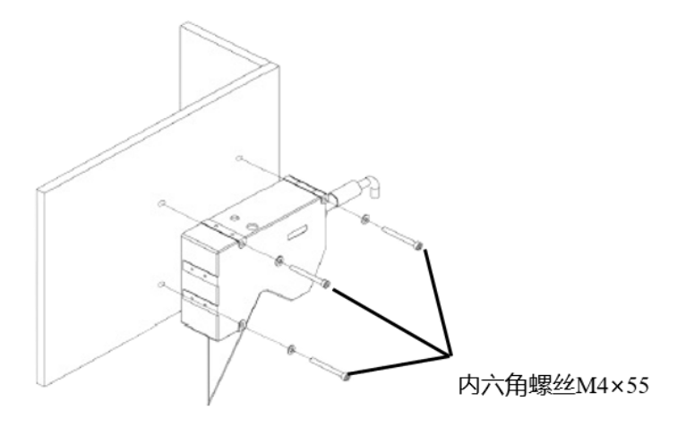
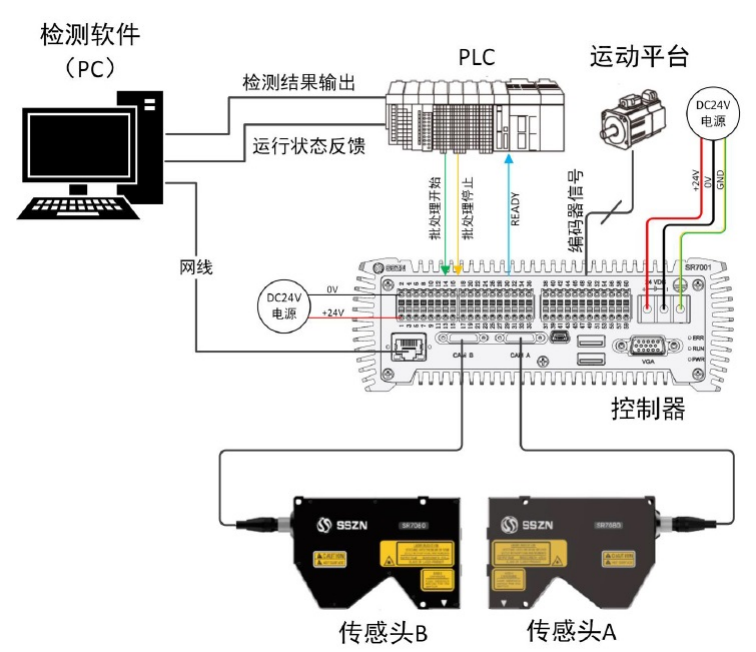
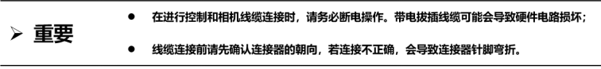
Lưu ý
Góc chết khi đo
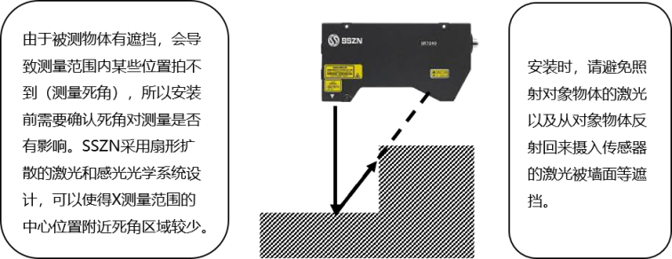
Ánh sáng tán xạ
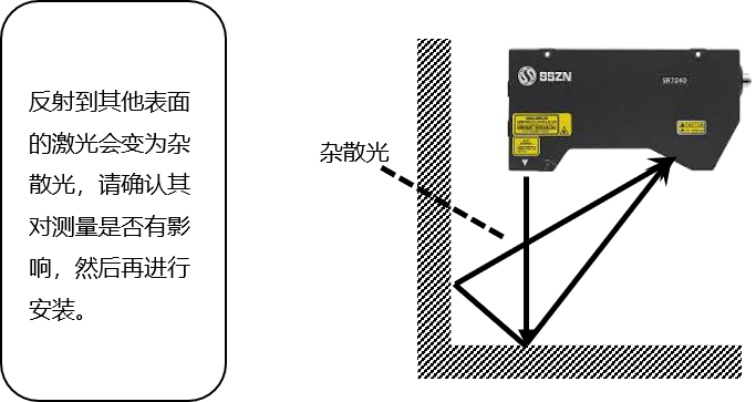
Bước 1：Kết nối cáp cảm biến vào cổng giao tiếp dữ liệu trống;
Lưu ý
Nếu chỉ sử dụng 1 cảm biến, hãy kết nối vào đầu nối CAM A và dùng tua vít dẹt siết chặt hai bên của đầu nối.
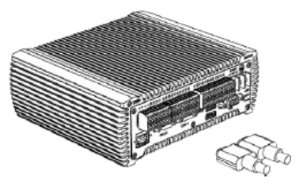
Bước 2：Kết nối cáp cảm biến
Sơ đồ kết nối cáp cảm biến
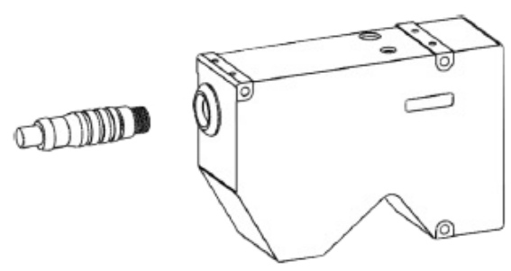
Kết nối hộp điều khiển trong chế độ kích hoạt bằng bộ mã hóa trong dự án thực tế
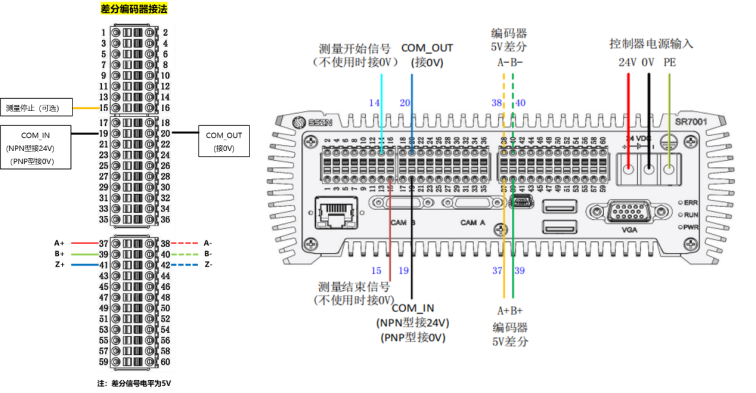
Lưu ý
Khi kết nối cáp, phải ngắt điện
Sử dụng cáp AWG14~AWG20
Công suất nguồn DC24V ≥ 36W
Nếu thanh đấu nối là đầu nối ép, sử dụng kích thước phù hợp với vít M3
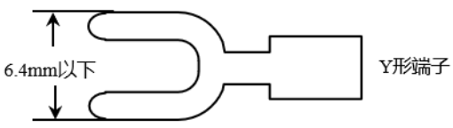
Bước 3：Cài đặt IP camera SSZN;
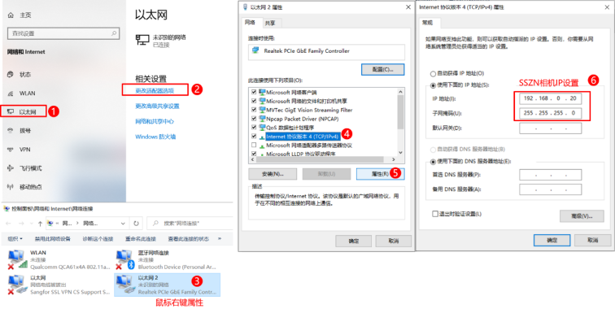
Sau đó hướng dẫn các bước hiệu chỉnh camera SSZN trực tiếp trong phần mềm VISIONAssembly 6.5.xxx;
Bước 4：Nháy đúp vào biểu tượng phần mềm VISIONAssembly, lần lượt chọn “Cài đặt” → “Quản lý các camera 3D kết nối với thiết bị”, mở giao diện quản lý camera 3D, các bước như hình:
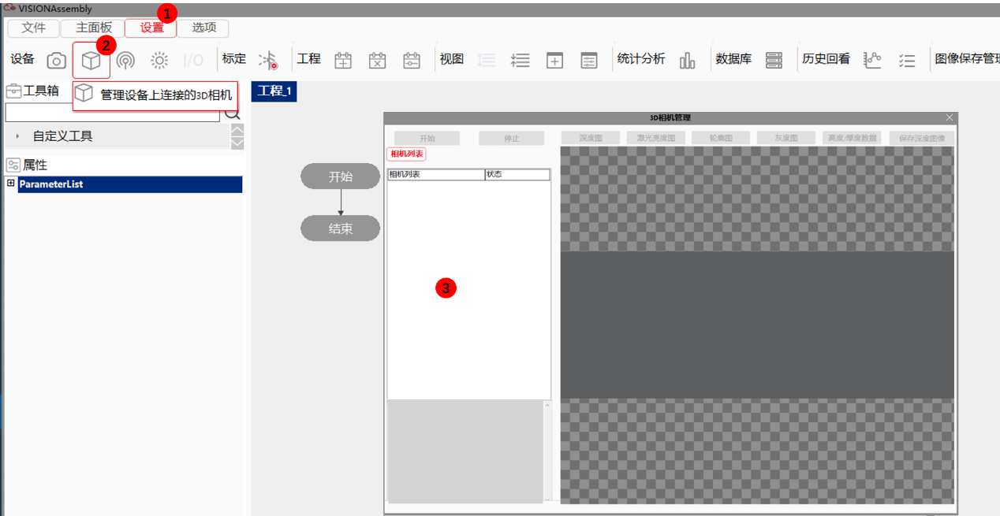
Bước 5：Trong danh sách camera, nhấp chuột phải chọn thêm camera, chọn camera SSZN, cài đặt IP camera, nhấn xác nhận, chờ thông báo kết nối thành công (chú ý: góc dưới bên trái giao diện hiển thị trạng thái kết nối camera), các bước cụ thể như hình:
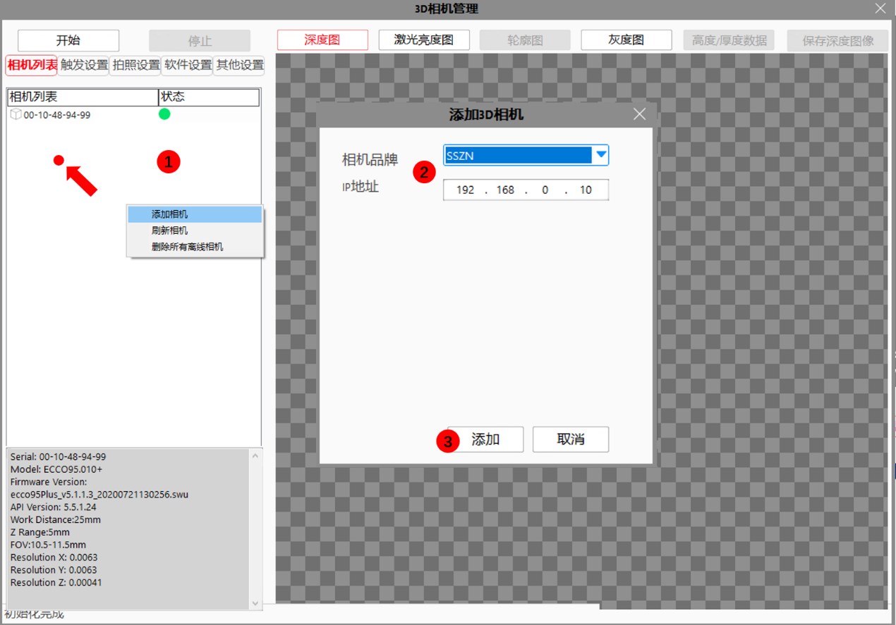
Bước 6：Điều chỉnh chất lượng hình ảnh;
Chúng ta sử dụng phần mềm VISIONAssembly 6.5 để điều chỉnh hình ảnh, khi sử dụng kích hoạt bằng bộ mã hóa, các tham số được cài đặt như hình:
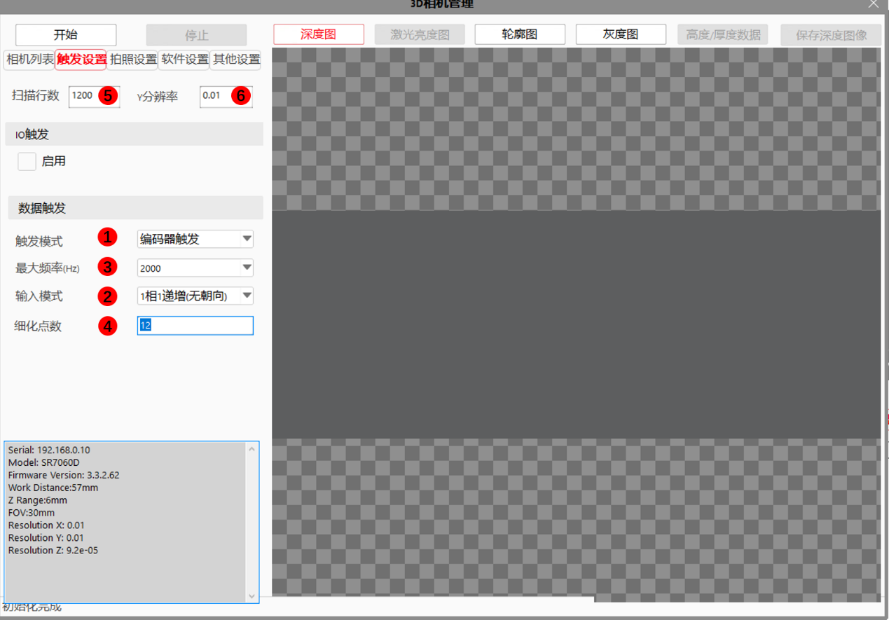
Chọn chế độ nhập：1 pha 1 tăng dần (tùy chọn này chủ yếu điều khiển dạng tín hiệu đầu ra của hộp điều khiển nhận từ bộ mã hóa, không yêu cầu đặc biệt, khuyến nghị chọn “1 pha 1 tăng dần”);
Số điểm chi tiết：Tham số này còn gọi là “tỷ lệ chia”, cách tính tỷ lệ chia liên quan đến tần số tín hiệu của bộ mã hóa và tốc độ di chuyển của bộ mã hóa; cách tính khoảng cách được mô tả;
Ví dụ：Bộ mã hóa di chuyển 1mm xuất 1000 tín hiệu, trong tham số camera này tần số thu tối đa 5000fps, tốc độ trục chuyển động 60mm/s, khoảng cách trục di chuyển: 120mm; cách tính số điểm chi tiết như sau:
Trục di chuyển 1mm mất thời gian: 1/60s;
Tần số tín hiệu xuất của bộ mã hóa: 1000 / (1/60s) = 60000Hz
Tỷ lệ chia: 60000 / 5000 = 12
Tần số tối đa：Tần số thu thực tế trong chế độ kích hoạt bộ mã hóa không vượt quá tham số này, tần số thực tế phụ thuộc vào tần số tín hiệu xuất của trục và số điểm chi tiết; giá trị tối đa trong hộp chọn liên quan đến phạm vi đo theo hướng Z (phiên bản hiện tại phần mềm VA không hỗ trợ cài đặt tham số này, có thể cài đặt trong phần mềm KEYENCE) và tham số thời gian phơi sáng (phạm vi đo Z càng nhỏ, thời gian phơi càng ngắn, giá trị “tần số tối đa” có thể cài đặt càng cao);
Sau khi cài đặt xong nhấn “Hoàn tất” để thoát phần mềm LJ-X; tiếp theo mở phần mềm VA để hoàn tất việc thu nhận hình ảnh;
Bước 7：Thoát giao diện quản lý camera 3D, sau đó trong giao diện kỹ sư VA, thêm công cụ thu nhận camera 3D; trong thanh thuộc tính công cụ, chọn “Tên camera” là camera đã hiệu chỉnh;
| Phần cứng | Yêu cầu cơ bản |
|---|---|
| CPU | Intel i7 thế hệ 5 trở lên (i7, i9, Xeon) |
| RAM | Trên 16GB |
| GPU | Tích hợp hoặc rời, khuyến nghị card Intel và Nvidia |
| HDD | SSD ≥ 256GB (không khuyến nghị sử dụng ổ cơ) |
| Card mạng | Gigabit, hỗ trợ gói khung dữ liệu lớn 9014Bytes |
| Hệ điều hành | Khuyến nghị Windows 10 (Windows 7 cần cài bản vá kb3033929) |
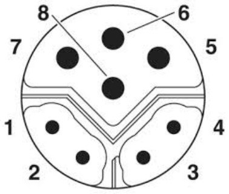
| Số PIN | Màu sắc | Tên | Ý nghĩa |
|---|---|---|---|
| 1 | Trắng-cam | Input 1 | Tín hiệu kích hoạt + |
| 2 | Cam | input GND | Mass tín hiệu đầu vào |
| 3 | Trắng-xanh lá | RS485-B | Dây RS485 B |
| 4 | Xanh lá | RS485-A | Dây RS485 A |
| 5 | Xanh dương | Input 3 | Dây reset tín hiệu Location |
| 6 | Trắng | GND | Mass nguồn 24V |
| 7 | Nâu | 24V | Nguồn 24V dương |
| 8 | Đen | Input 2 | Dây kích hoạt / vô hiệu hóa |
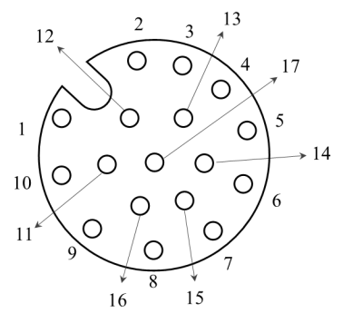
| Số PIN | Màu sắc | Tên | Ý nghĩa |
|---|---|---|---|
| 1 | Nâu | Output 1 | Đầu ra 24V1 (500mA) |
| 2 | Xanh dương | Output 2 | Đầu ra 24V2 (500mA) |
| 3 | Trắng | Output 3 | Đầu ra 24V3 (500mA) |
| 4 | Xanh lá | Output 4 | Đầu ra 24V4 (500mA) |
| 5 | Hồng | Input 4 | Đầu vào 4 (24V) |
| 6 | Vàng | Not in use | |
| 7 | Đen | Output GND | Mass chung đầu ra |
| 8 | Xám | Output GND | Mass chung đầu ra |
| 9 | Đỏ | Not in use | |
| 10 | Tím | Not in use | |
| 11 | Xám-hồng | 24V Out | Đầu ra 24V từ X2 |
| 12 | Đỏ-xanh dương | 24V Out | Đầu vào 24V từ X2 |
| 13 | Trắng-xanh lá | Input GND | Mass chung đầu vào |
| 14 | Nâu-xanh lá | Not in use | |
| 15 | Trắng-vàng | Not in use | |
| 16 | Vàng-nâu | Not in use | |
| 17 | Trắng-xám | Not in use |
Kích thước và đấu nối camera LMI FOCALSPEC
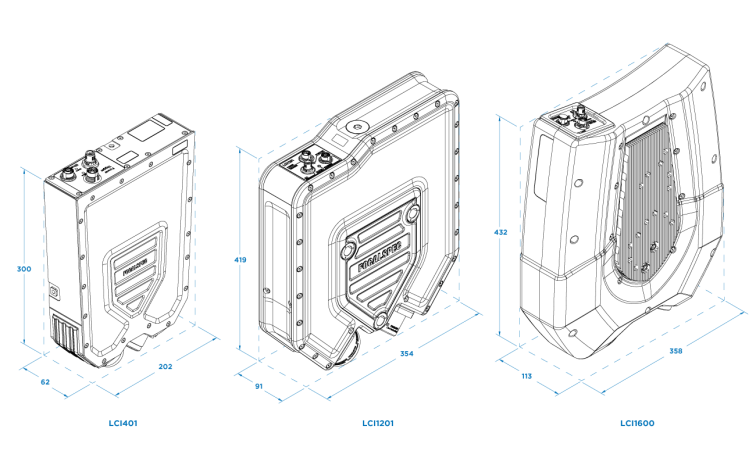
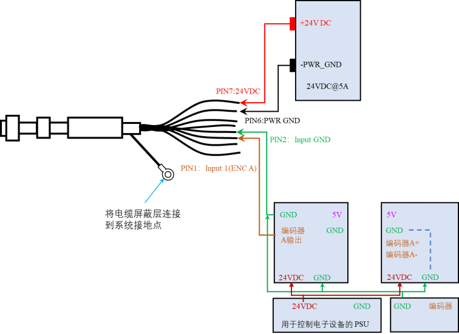
Bước 1：Nhấp vào biểu tượng quả địa cầu nhỏ ở góc dưới bên phải thanh tác vụ;
Bước 2：Trong menu bên phải, chọn “Cài đặt mạng & Internet”;
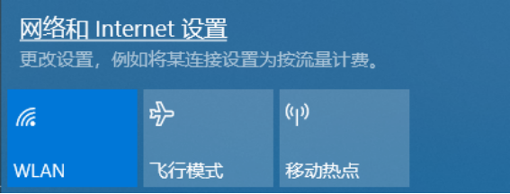
Bước 3：Trong giao diện cài đặt, chọn Ethernet, sau đó chọn “Thay đổi tùy chọn bộ điều hợp”; tìm card mạng kết nối với camera, nhấp đúp hoặc chuột phải → Thuộc tính để mở;
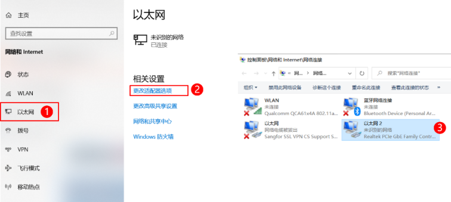
Bước 4：Nhấp đúp vào “Giao thức Internet phiên bản 4 (TCP/IPv4)” trong khung đỏ để vào giao diện cài đặt IP;
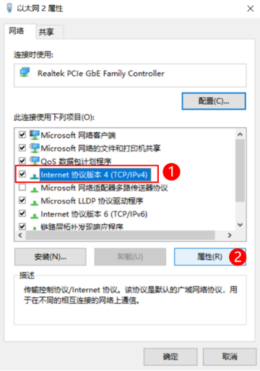
Bước 5：Cài đặt IP tĩnh, chỉ cần thiết lập địa chỉ IP và subnet mask theo quy định;

Bước 6：Mở phần mềm VA, chọn “Cài đặt” → “Quản lý các camera 3D kết nối với thiết bị” để mở giao diện quản lý camera 3D, camera RVC sẽ tự động kết nối.


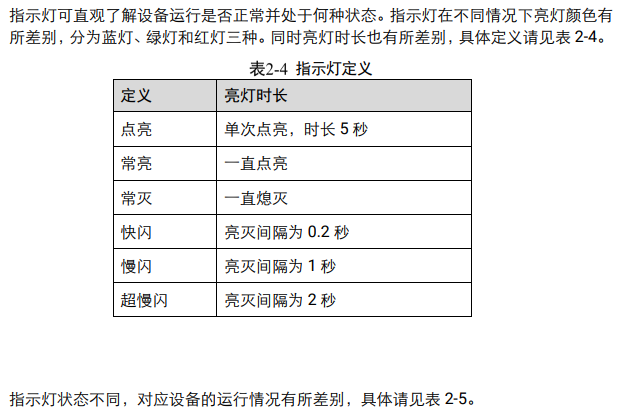
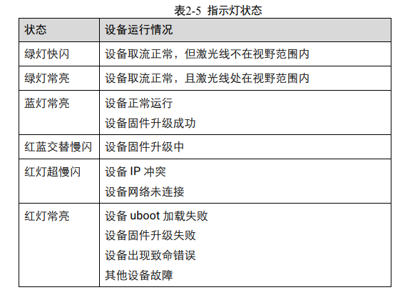
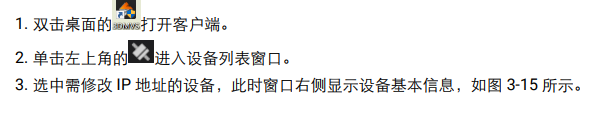
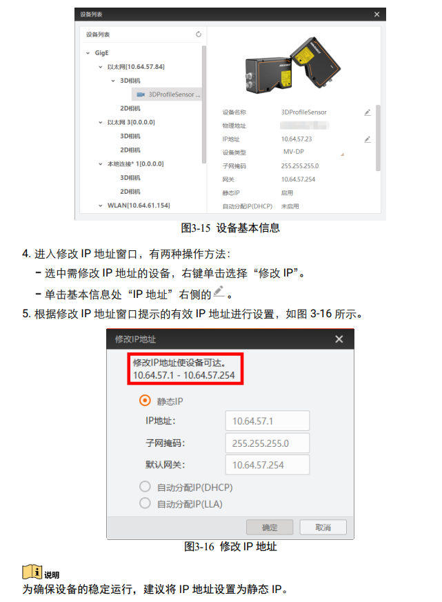